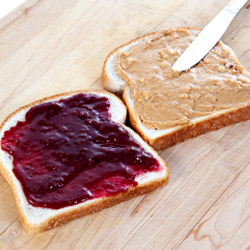
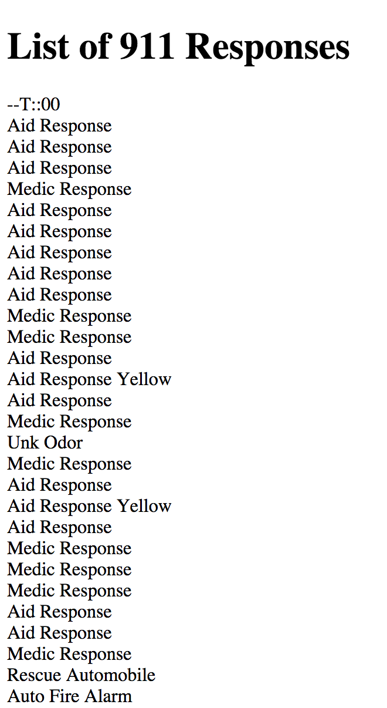
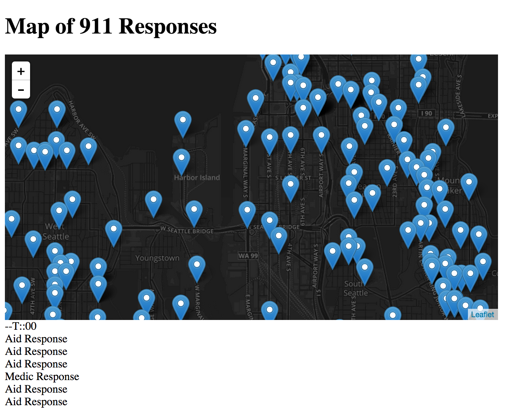

The World of JavaScript
TechDiversified Technical Workshop
Created by Ryan Whitley / @apollolm
JavaScript?
Let's take a step back
HTML
Let's start with a web page
Fictitious Doohickey.com
http://jsfiddle.net/apollolm/jcr50on2/
Why is nothing happening?
Because there is no JavaScript!
OK. What is JavaScript?
JavaScript is a programming language.
Created in 1995 (19 years old!)
Created to make web pages come alive.
Tell Me More
JavaScript and Webpages are like
Peanut Butter & Jelly

Like...
Ike & Tina
What?
An HTML webpage is a cold, static, lifeless skeleton
JavaScript *listens* to stuff happening in the page, and can respond.
What kind of stuff?
JavaScript can detect:
- Mouse Clicks
- Keyboard Interaction
- Your location (whoa). Really.
- Other Mouse Movements
Let's Try It
JavaScript *listens* to stuff happening in the page, and can respond.
You Try It
Time: ~15 Minutes
- Create a folder on your machine. Call it API101.
- Open a text editor on your machine, and save a file called list.html to the API101 folder.
- Go to https://gist.github.com/apollolm and copy the api101 starter HTML code.
- Paste the code into your list.html file in your text editor. Save.
- Double click list.html to open it in a browser.
OK. What just happened?
Don't worry. We'll go thru step by step.
Step 1
HTML - the container for data to go into
<!doctype html>
<html lang="en">
<head>
<meta charset="utf-8">
<title>TechDiversified Worshop - The Power of APIs</title>
</head>
List of 911 Responses
</body>
</html>
Step 2
Load jQuery - a javascript helper library
Step 3
Call to the API (getJSON) - wait for response
Step 4
Loop over each result and write it into the container
//After the API is successfully called, the flow comes here.
$.each(result, function(idx, item){
$("#myResults").append(item.type);
$("#myResults").append("
");
});
The result?
A boring, ugly list.
911 Data - Take 2
Time: ~10 Minutes
- Open a text editor on your machine, and save a new file called map.html to the API101 folder.
- Go to https://gist.github.com/apollolm and copy the map.html HTML code.
- Paste the code into your map.html file in your text editor. Save.
- Double click map.html to open it in a browser.
Recap
Step 1
Same as before, but add a mapContainer div
Step 2
Load Leaflet - a mapping library
Step 3
Call to the API (getJSON) - wait for response
Same as before
Step 4
Loop over each result and write it into the container
Also, add the item to the map
//After the API is successfully called, the flow comes here.
$.each(result, function(idx, item){
//Write the item to a list
$("#myResults").append(item.type);
$("#myResults").append("
");
//Add map marker
if(item.latitude && item.longitude){
L.marker([item.latitude, item.longitude]).addTo(map);
}
});
The result?
A slightly more usable visualization
Try a few things
Time: ~10 minutes
Try sorting or filtering the list by type (Try to only show the type 'Aid Response')
Try adding another piece of information to the list - incident # perhaps?
Try adding another dataset you find at http://data.seattle.gov - more items on the map, create a separate list
Let's take a look at some other APIs
Meetup - http://www.meetup.com/meetup_api/
Foursquare - https://developer.foursquare.com/
Google (Tons of APIs) - Google API Explorer
Facebook - Facebook Graph API
I Lied
Well not really.
But APIs can do more than just fetch data.
Certain APIs let you put new data in.
Or delete or alter data.
You could build your own API to track your location (for example)
What Next?
Go forth, find interesting APIs, and start to fit some pieces together for your app
In summary
APIs provide your apps, websites or scripts access to data from the outside world.
Make your program come alive (not literally)(yet)
Build new apps off of existing data - make older experiences better
Questions?
This presentation can be found at http://tech-diversified.github.io/Workshops/API101